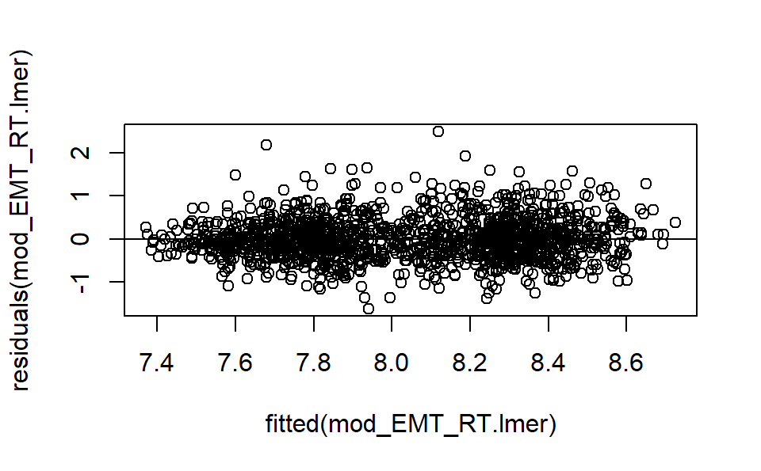

Emotion and empathy measures
Emotion matching task
We employed an emotion matching task (EMT; adapted from Watling & Damaskinou, 2018) to assess children’s emotion knowledge. Children saw two faces with the same identity but different facial expression. Both faces were presented at the same time. While the faces were on screen, the children heard an audio lay-over of one of the emotion words (happy, angry or neutral). The children had to indicate with a button press which face matched the audio lay-over. We measured reaction times and accuracy.
We excluded:
- Reaction times < 250 ms or > 7s
- Values </> 2.5 of the median absolute deviation (MAD) based on the individual participant
- Incorrect answers
We calculated general linear mixed models (GLMM) for accuracy rates and linear mixed models (LMM) for reaction times. Fixed effects are defined for each model individually. Chronological age and working memory were entered as scaled covariates in all (general) linear mixed model analyses to control for cognitive abilities of the children as well as potential differences in age.
The random effects structure included random intercepts for participants (1|ID) and stimulus (1|Stim_Type). For each model, we commenced with the maximal random effect structure. Random intercepts were defined for participants and stimuli. Random slopes were defined for all predictors, but not covariates. We set correlations of random terms to zero and performed a principal component analysis on the random-effects variance-covariance estimates to determine the number of components supported by the data. We removed random effects explaining zero variance, in order to prevent over-parametrization. Afterwards, we checked whether all random intercepts improved the model using likelihood-ratio-testing.
We expected the highest accuracy rates for happy faces (tested with GLMM) and fastest reaction times for pairings where happy faces were involved (tested with LMM). Assumptions for multiple regression were checked for all models (normality of the residuals, linearity, multicollinearity, homoscedasticity).
Descriptives
# Select RT inspected criteria
EMT_Acc_Plot = subset(EMT,Exclude_smaller_250ms == FALSE & Exclude_larger_7s == FALSE & Exclude_MAD == FALSE)
# Select correct trials
EMT_Acc_Plot = subset(EMT_Acc_Plot, Answer == 1)
# Create factor, define neutral as baseline
EMT_Acc_Plot$emotion = factor(EMT_Acc_Plot$emotion, levels=c("neutral","happy","angry"))
# Get accuracy for novel and repeated condition
acc_all = data.frame(xtabs(~ID+emotion, EMT_Acc_Plot))
# Recode to accuracy in percent
acc_all$Freq = (acc_all$Freq/24)*100
# Calculate descriptives on accuracy
stats_acc_all = summarySE(acc_all, measurevar="Freq", groupvars=c("emotion"))
# Plot accuracy
EMT_Acc_bar = ggplot(stats_acc_all, aes(x=emotion, y=Freq, fill = emotion)) +
geom_bar(position=position_dodge(), stat="identity",colour="black", size=0.7,width=0.9) +
geom_errorbar(aes(ymin=Freq-se, ymax=Freq+se), size=1, width=0.2, position=position_dodge(.9)) +
labs (x= "", y = "Accuracy [%]") +
coord_cartesian(ylim = c(0, 60)) +
scale_y_continuous(breaks=seq(0,60,20))+
scale_fill_manual(values=emotion_col)+
theme_bw()+
theme_SN
# Raincloud plot EMT RT
# Only examine clean data
EMT_RT_Plot = subset(EMT,Exclude_smaller_250ms == FALSE & Exclude_larger_7s == FALSE & Exclude_MAD == FALSE)
# Select correct responses
EMT_RT_Plot = subset(EMT_RT_Plot, Answer == 1)
# Create factor, define neutral as baseline
EMT_RT_Plot$emotion = factor(EMT_RT_Plot$emotion, levels=c("neutral","happy","angry"))
# Calculate summary
lb = function(x) mean(x) - sd(x)
ub = function(x) mean(x) + sd(x)
sumld = ddply(EMT_RT_Plot , ~ emotion, summarise,
mean = mean(RT_in_ms), median = median(RT_in_ms), lower = lb(RT_in_ms), upper = ub(RT_in_ms))
# Plot rainclouds
EMT_RT_rain = ggplot(data = EMT_RT_Plot, aes(y = RT_in_ms, x = emotion, fill = emotion)) +
geom_flat_violin(position = position_nudge(x = .12, y = 0), alpha = 1, color="black") +
geom_point(aes(y = RT_in_ms, color = emotion), shape = 19, position = position_jitter(width = .1), size = .7, alpha = 1) +
geom_point(data = sumld, aes(x = emotion, y = mean), position = position_nudge(x = .2), size = 2.5) +
geom_errorbar(data = sumld, aes(ymin = lower, ymax = upper, y = mean), position = position_nudge(x = .2, y = 0), width = 0)+
scale_y_continuous(name="Reaction time [ms]", breaks=seq(0,6500,1000), limits=c(0,6500))+
xlab("")+
expand_limits(x = 2.00) +
guides(fill = FALSE) +
guides(color = FALSE) +
coord_flip() + # flip or not?
scale_fill_manual(values=emotion_col) +
scale_color_manual(values=emotion_col)+
theme_bw() +
theme_SN+
theme(panel.grid.major.y = element_blank())
# Combine plots
combine_plots(EMT_Acc_bar, EMT_RT_rain,
ncol = 2, nrow = 1,
labels = c("A", "B"))
Model specification
GLMM: Random effect structure
# RT cleaning criteria
EMT_Acc = subset(EMT,Exclude_smaller_250ms == FALSE & Exclude_larger_7s == FALSE & Exclude_MAD == FALSE)
# Factor random effects
EMT_Acc$ID = as.factor(EMT_Acc$ID)
EMT_Acc$Stim_Type = as.factor(EMT_Acc$Stim_Type)
# Create factor, define neutral as baseline
EMT_Acc$emotion = factor(EMT_Acc$emotion, levels=c("neutral","happy","angry"))
# Set treatment contrast
contrasts(EMT_Acc$emotion) = contr.treatment(3)
# Add contrast columns
mm_mod_EMT_Acc = model.matrix( ~ emotion, EMT_Acc)
# Attach to dataframe
EMT_Acc[,(ncol(EMT_Acc)+1):(ncol(EMT_Acc)+3)] = mm_mod_EMT_Acc
names(EMT_Acc)[(ncol(EMT_Acc)-2):ncol(EMT_Acc)] = c("Mean","Hap_Neu", "Ang_Neu")
# Construct model
mod_EMT_Acc.glmm1 = glmer(Answer~ Hap_Neu + Ang_Neu + scale(Age) + scale(WM) +
(1 + Hap_Neu + Ang_Neu ||ID) +
(1 + Hap_Neu + Ang_Neu ||Stim_Type),
data = EMT_Acc,control=glmerControl(calc.derivs = FALSE),
family = binomial)
# 1st: check how many zero variance terms you got in random effects
summary(rePCA(mod_EMT_Acc.glmm1))
# 2nd: check which random terms explain the least variance
print(VarCorr(mod_EMT_Acc.glmm1),comp = "Variance")
# Likelihood ratio testing
# ID
mod_EMT_Acc.glmm2 = glmer(Answer~ Hap_Neu + Ang_Neu + scale(Age) + scale(WM) +
(1 |ID) +
(1 + Hap_Neu + Ang_Neu ||Stim_Type),
data = EMT_Acc,control=glmerControl(calc.derivs = FALSE),
family = binomial)
# Calculate ANOVA
anova(mod_EMT_Acc.glmm1,mod_EMT_Acc.glmm2)
# Stimulus type
mod_EMT_Acc.glmm3 = glmer(Answer~ Hap_Neu + Ang_Neu + scale(Age) + scale(WM) +
(1 + Hap_Neu + Ang_Neu ||ID) +
(1 |Stim_Type),
data = EMT_Acc,control=glmerControl(calc.derivs = FALSE),
family = binomial)
# Calculate ANOVAs
anova(mod_EMT_Acc.glmm1,mod_EMT_Acc.glmm3)
# Final model
mod_EMT_Acc.glmm4 = glmer(Answer~ Hap_Neu + Ang_Neu + scale(Age) + scale(WM) + (1|ID)+(1 + Hap_Neu + Ang_Neu || Stim_Type),
data = EMT_Acc,control=glmerControl(calc.derivs = FALSE), family = binomial) We applied a treatment contrast comparing neutral vs happy and neutral vs angry emotional facial expressions (Hap_Neu, Ang_Neu). Accordingly, we fitted single-trial data to the following model:
Answer ~ Hap_Neu + Ang_Neu + scale(Age) + scale(WM) + (1 | ID) + , (1 + Hap_Neu + Ang_Neu || Stim_Type)
GLMM: Overdispersion
If the p-value is < 0.05, data would be overdispersed. Here p > 0.05. Hence, overdispersion is not a problem.
# Assumption check: Appropriate estimation of variance
overdisp_fun(mod_EMT_Acc.glmm4)## chisq ratio rdf p
## 1036.50 0.72 1448.00 1.00LMM: Random effect structure
# Correct responses
EMT_RT = subset(EMT, Answer == 1)
# RT cleaning criteria
EMT_RT = subset(EMT_RT,Exclude_smaller_250ms == FALSE & Exclude_larger_7s == FALSE & Exclude_MAD == FALSE)
# Factor random effects
EMT_RT$ID = as.factor(EMT_RT$ID)
EMT_RT$Stim_Type = as.factor(EMT_RT$Stim_Type)
# Create factor, define neutral as baseline
EMT_RT$emotion = factor(EMT_RT$emotion, levels=c("neutral","happy","angry"))
# Set treatment contrast
contrasts(EMT_RT$emotion) = contr.treatment(3)
# Add contrast columns
mm_c = model.matrix( ~ emotion, EMT_RT)
# Attach to dataframe
EMT_RT[,(ncol(EMT_RT)+1):(ncol(EMT_RT)+3)] = mm_c
names(EMT_RT)[(ncol(EMT_RT)-2):ncol(EMT_RT)] = c("Mean","Hap_Neu", "Ang_Neu")
# Build model
mod_EMT_RT.lmer1 = lmer(log(RT_in_ms) ~
Hap_Neu + Ang_Neu + scale(Age) + scale(WM) +
(1 + Hap_Neu + Ang_Neu||ID) +
(1 + Hap_Neu + Ang_Neu||Stim_Type),
data = EMT_RT,
control=lmerControl(calc.derivs = FALSE))
# 1st: check how many zero variance terms you got in random effects
summary(rePCA(mod_EMT_RT.lmer1))
# 2nd: check which random terms explain the least variance
print(VarCorr(mod_EMT_RT.lmer1),comp = "Variance")
# Improved model
mod_EMT_RT.lmer2 = lmer(log(RT_in_ms) ~
Hap_Neu + Ang_Neu + scale(Age) + scale(WM) +
(1 + Ang_Neu||ID) +
(0 + Ang_Neu||Stim_Type),
data = EMT_RT,
control=lmerControl(calc.derivs = FALSE))
# Re-check the model
summary(rePCA(mod_EMT_RT.lmer2))
print(VarCorr(mod_EMT_RT.lmer2 ),comp = "Variance")
## Likelihood ratio testing
# ID
mod_EMT_RT.lmer3 = lmer(log(RT_in_ms) ~
Hap_Neu + Ang_Neu + scale(Age) + scale(WM) +
(1 |ID) +
(0 + Ang_Neu||Stim_Type),
data = EMT_RT,
control=lmerControl(calc.derivs = FALSE))
# Calculate ANOVA
anova(mod_EMT_RT.lmer2,mod_EMT_RT.lmer3)
# Stim_Type
mod_EMT_RT.lmer4 = lmer(log(RT_in_ms) ~
Hap_Neu + Ang_Neu + scale(Age) + scale(WM) +
(1 + Ang_Neu|ID) +
(1|Stim_Type),
data = EMT_RT,
control=lmerControl(calc.derivs = FALSE))
# Calculate ANOVA
anova(mod_EMT_RT.lmer2,mod_EMT_RT.lmer4)
# Final model
mod_EMT_RT.lmer5 = lmer(log(RT_in_ms) ~
Hap_Neu + Ang_Neu + scale(Age) + scale(WM) +
(1 | ID)+
(1 | Stim_Type),
data = EMT_RT,
control=lmerControl(calc.derivs = FALSE))We applied a treatment contrast comparing neutral vs happy and neutral vs angry emotional facial expressions (Neutral vs Happy, Neutral vs Angry). Accordingly, we fitted single-trial data to the following model:
log(RT_in_ms) ~ Hap_Neu + Ang_Neu + scale(Age) + scale(WM) + , (1 | ID) + (1 | Stim_Type)
LMM: Normality of residuals
RTs were log-transformed (determined using the Box-Cox procedure) to meet the assumption of normally distributed residuals.
# Visualize normality assumption of residuals (without log transform)
mod_RT_lmm_no_log = lm(RT_in_ms ~ emotion, data=EMT_RT)
res.mod_RT_lmm_no_log = residuals(mod_RT_lmm_no_log)
par(mfrow=c(1,2))
qqpl_RT_lmm_no_log = qqPlot(res.mod_RT_lmm_no_log, main="QQplot before transformation")
norm_RT_lmm_no_log = plot(density(res.mod_RT_lmm_no_log), main="Density plot before transformation") 
par(mfrow=c(1,1))
# Check which transformation of DV is suitable
# Calculate box-cox plot
mod_RT_targ = lm(RT_in_ms ~ emotion, data=EMT_RT)
boxcox(mod_RT_targ) 
# Visualize normality assumption of residuals (with log transform)
mod_RT_lmm_log = lm(log(RT_in_ms) ~ emotion, data=EMT_RT)
res.mod_RT_lmm_log = residuals(mod_RT_lmm_log)
par(mfrow=c(1,2))
qqpl_RT_lmm_log = qqPlot(res.mod_RT_lmm_log, main="QQplot after transformation")
norm_RT_lmm_log = plot(density(res.mod_RT_lmm_log), main="Density plot after transformation") 
par(mfrow=c(1,1)) LMM: Homoscedasticity
# Check homoscedasticity
plot(fitted(mod_EMT_RT.lmer5), residuals(mod_EMT_RT.lmer5))
abline(0, 0) 
Results
With regard to accuracy, we did not find a significant effect for happy vs neutral faces or angry vs neutral faces. Children were significantly faster for happy compared to neutral faces, but not for angry compared to neutral faces. None of the covariates reached significance.
# Define labels
labels = c("Intercept","Happy vs Neutral", "Angry vs Neutral", "Age","Working memory")
# Show results
tab_model(mod_EMT_Acc.glmm4, mod_EMT_RT.lmer5,
pred.labels=labels, show.ci = FALSE,
show.se = TRUE, string.se = "SE",
show.stat = TRUE, string.stat = "t",
show.re.var = TRUE, show.obs = TRUE,
emph.p = TRUE, dv.labels=c("Accuracy","Reaction time") , show.icc = TRUE)| Accuracy | Reaction time | |||||||
|---|---|---|---|---|---|---|---|---|
| Predictors | Odds Ratios | SE | t | p | Estimates | SE | t | p |
| Intercept | 2.60 | 0.25 | 3.81 | <0.001 | 7.85 | 0.06 | 125.75 | <0.001 |
| Happy vs Neutral | 1.51 | 0.51 | 0.81 | 0.421 | -0.06 | 0.03 | -2.06 | 0.039 |
| Angry vs Neutral | 1.91 | 0.45 | 1.44 | 0.151 | -0.05 | 0.03 | -1.87 | 0.061 |
| Age | 1.30 | 0.19 | 1.42 | 0.155 | -0.09 | 0.06 | -1.51 | 0.130 |
| Working memory | 1.09 | 0.19 | 0.47 | 0.636 | 0.08 | 0.06 | 1.37 | 0.171 |
| Random Effects | ||||||||
| σ2 | 3.29 | 0.12 | ||||||
| τ00 | 5.02 Stim_Type | 0.00 Stim_Type | ||||||
| 7.06 Stim_Type.1 | 0.10 ID | |||||||
| 0.89 Stim_Type.2 | ||||||||
| 0.71 ID | ||||||||
| ICC | 0.41 | 0.45 | ||||||
| N | 28 ID | 28 ID | ||||||
| 59 Stim_Type | 59 Stim_Type | |||||||
| Observations | 1457 | 994 | ||||||
| Marginal R2 / Conditional R2 | 0.027 / 0.428 | 0.054 / 0.483 | ||||||
Note: p-values for the fixed effects calculated using Wald-statistics approximation, uncorrected. SE: standard error; t: test statistic coefficient; p: p-value; σ2: within-group variance; τ00: between-group variance; ICC: interclass correlation (ratio of between-cluster variance to total variance); N: number of random effects.
Emotion- and empathy related measures and ERP
We also investigated the link between ERP amplitudes and emotion- and empathy-related measures. We calculated correlations between the amplitude differences of angry and neutral faces with composite scores parents’ and experimenter’s rating of children’s empathy and emotion knowledge.
## Separate data set for neutral and angry and dalculate participant's P1/P3 mean
# angry
ERPs_ang = subset(ERPs, Condition == 3)
ERPs_mean = data.frame(tapply(ERPs_ang$mean_ROI_P1,ERPs_ang$ID, mean))
names(ERPs_mean)[1] = "P1_ang"
ERPs_mean$P3_ang = tapply(ERPs_ang$mean_ROI_P3,ERPs_ang$ID, mean)
# neutral
ERPs_neu = subset(ERPs, Condition == 2)
ERPs_mean$P1_neu = tapply(ERPs_neu$mean_ROI_P1,ERPs_neu$ID, mean)
ERPs_mean$P3_neu = tapply(ERPs_neu$mean_ROI_P3,ERPs_neu$ID, mean)
# Calculate difference score for angry-neutral
ERPs_mean$P1_Diff_Ang_Neu = ERPs_mean$P1_ang-ERPs_mean$P1_neu
ERPs_mean$P3_Diff_Ang_Neu = ERPs_mean$P3_ang-ERPs_mean$P3_neu
# Remove rows of de-selected participants
ERPs_mean = ERPs_mean[-c(4),]
# Integrate questionnare data
ERPs_mean$EMK_EK_P = qn_data$EMK_EK_P
ERPs_mean$EMK_EM_P = qn_data$EMK_EM_P
ERPs_mean$EMK_EK_Ch = qn_data$EMK_EK_Ch
ERPs_mean$EMK_EM_Ch = qn_data$EMK_EM_Ch
# Compute composite scores for parental/children measures of EMK
ERPs_mean$EMK_EK = ERPs_mean$EMK_EK_P + ERPs_mean$EMK_EK_Ch
ERPs_mean$EMK_EM = ERPs_mean$EMK_EM_Ch + ERPs_mean$EMK_EM_Ch
# Select variables
ERPs_corr = subset(ERPs_mean,select = c(P1_Diff_Ang_Neu, P3_Diff_Ang_Neu, EMK_EM,EMK_EK))
## Plot correlations
# Empathy and P1 difference
EMT_ERP_scat1 = ggplot(ERPs_mean,aes(x = EMK_EM, y = P1_Diff_Ang_Neu))+
geom_point(shape = 21, size = 2, color ="gray0", fill = "gray0")+
geom_smooth(method=lm, color = "black", size = 1)+
labs(x = "Empathy Score", y = "P1 difference angry vs neutral")+
theme_bw()
# Empathy and P3 difference
EMT_ERP_scat2 = ggplot(ERPs_mean,aes(x= EMK_EM, y = P3_Diff_Ang_Neu))+
geom_point(shape = 21, size = 2, color ="gray27", fill ="gray27")+
geom_smooth(method=lm, color = "black", size = 1)+
labs(x = "Empathy Score", y = "P3 difference angry vs neutral")+
theme_bw()
# EK and P1 difference
EMT_ERP_scat3 = ggplot(ERPs_mean,aes(x = EMK_EK, y = P1_Diff_Ang_Neu))+
geom_point(shape = 21, size = 2, color ="gray35", fill = "gray35")+
geom_smooth(method=lm, color = "black", size = 1)+
labs(x = "Emotion knowledge", y = "P1 difference angry vs neutral")+
theme_bw()
# EK and P3 difference
EMT_ERP_scat4 = ggplot(ERPs_mean,aes(x= EMK_EK, y = P3_Diff_Ang_Neu))+
geom_point(shape = 21, size = 2, color ="gray52", fill ="gray52")+
geom_smooth(method=lm, color = "black", size = 1)+
labs(x = "Emotion knowledge", y = "P3 difference angry vs neutral")+
theme_bw()
# Combine plots
# Explanation: draw_plot(plot, for position: x = 0, y = 0, width = 1, height = 1)
ggdraw(xlim = c(0, 1), ylim = c(0,1)) +
draw_plot(EMT_ERP_scat1, 0, 0.5, 0.5, 0.5) +
draw_plot(EMT_ERP_scat2, 0.5, 0.5, 0.5, 0.5) +
draw_plot(EMT_ERP_scat3, 0, 0, 0.5, 0.5) +
draw_plot(EMT_ERP_scat4, 0.5, 0, 0.5, 0.5) 
None of the correlations between ERP amplitude differences and emotion- and empathy-related measures reached significance.
# Create correlation table
ERP_corr_table = apaCorr(as.matrix(ERPs_corr), corrtype = "spearman")
kable(ERP_corr_table , format = "markdown")| 1 | 2 | 3 | 4 | |
|---|---|---|---|---|
| 1. P1 Diff Ang Neu | - | |||
| 2. P3 Diff Ang Neu | 0.5** | - | ||
| 3. EMK EM | 0.26 | 0.05 | - | |
| 4. EMK EK | -0.11 | -0.2 | 0.11 | - |
Note: Correlation coefficients were computed with Spearman’s rank correlations. * p< .05; ** p< .01; *** p< .001.